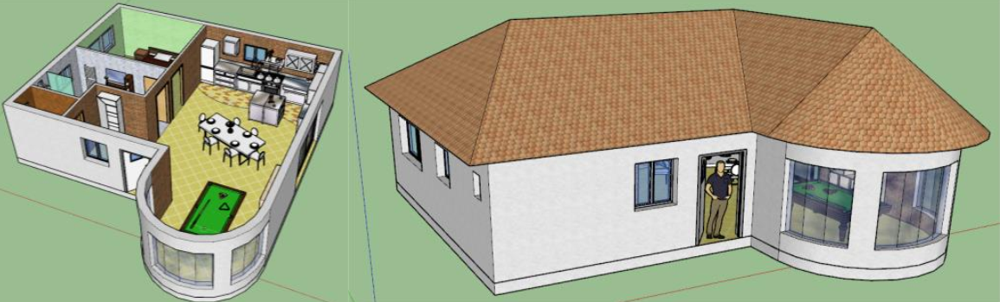
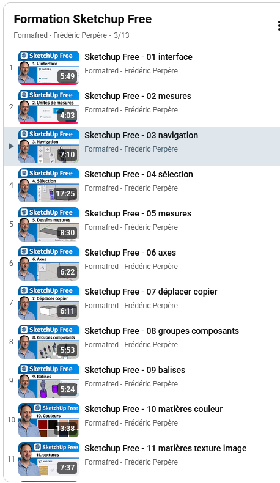

AS — Prise en main de SketchUp
Avant de modéliser votre propre Tiny House, entraînez-vous sur une maison classique : plancher, murs, ouvrants, plafond, toit et décoration — tous les outils dont vous aurez besoin.
Une compétence de communication technique
O4 — Communiquer une idée, un principe ou une solution technique, un projet, y compris en langue étrangère.
CO4.2 — Décrire le fonctionnement et/ou l'exploitation d'un produit en utilisant l'outil de description le plus pertinent.
Connaissances associées — 4.1.1 Représentation numérique des produits.
Ce que vous allez modéliser
Les dimensions de la maison sont toutes listées dans ce document. À la fin, vous devez obtenir une maison avec une aile arrondie en demi-cercle, un toit à quatre pans et une décoration intérieure — un exercice complet, indépendant de la Tiny House, pour maîtriser tous les outils avant de les réutiliser sur votre propre projet.
Nous allons dessiner la maison comme si nous la construisions, dans l'ordre : plancher bas, murs et cloisons, portes et fenêtres, plafond, toit.

Les onze étapes tirées du document pdf de prise en main de SketchUp.
-
Lancer SketchUp
Choisissez le modèle en mètres (s'il est demandé) et cliquez sur « Commencer à utiliser SketchUp ».
-
Mettre en place les barres d'outils
Cliquez sur « Affichage » puis « Barres d'outils ». Activez-les toutes, sauf : composants dynamiques, grand jeu d'outils, outils de caméra avancés, premiers pas, solides. Placez-les ensuite où vous le souhaitez.
-
Afficher la palette
Cliquez sur « Fenêtre » puis « Palette par défaut ». Cochez : infos sur l'entité, matières, composants, styles, calques, scènes, ombres — puis cliquez sur « Afficher la palette ». Les palettes « Calques » et « Infos sur l'entité » seront très utilisées : autant les laisser ouvertes en permanence.
-
La dalle du RDC
Créez un calque « Dalle Rdc » dans la palette Calques, puis activez-le. Avec l'outil « Ligne », cliquez un point, faites bouger la souris sans cliquer pour orienter le trait (il devient vert sur l'axe), tapez une valeur au clavier puis « Entrée » pour fixer sa longueur. Répétez pour dessiner le contour de la dalle.
La maison a une aile arrondie : avec l'outil « Arc », cliquez le milieu du segment, puis l'extrémité gauche, puis l'extrémité droite pour tracer un demi-disque ; supprimez le trait devenu inutile. Donnez ensuite du volume à la surface avec l'outil « Pousser/Tirer » (0,25 m), puis groupez l'ensemble (sélection + clic droit → « Créer un groupe »).
-
Les murs
Créez et activez un calque « Murs ». Redessinez le contour extérieur des murs par-dessus celui de la dalle (masquée ensuite), puis utilisez l'outil « Décalage » pour créer l'épaisseur intérieure (0,25 m) ; supprimez la surface intérieure en trop. Montez les murs à 2,5 m avec « Pousser/Tirer ».
Pour les cloisons, placez des axes de repère avec l'« outil Mètre » (distance au mur au clavier), tracez les contours avec l'outil « Ligne », supprimez les axes devenus inutiles, puis donnez du volume aux cloisons sur la même hauteur que les murs extérieurs. Groupez tous les murs et cloisons avant de sauvegarder.
-
Les portes et fenêtres
Placez quatre axes de repère (attention à bien rester sur l'axe bleu en vertical et l'axe vert en horizontal), dessinez l'ouverture avec l'outil « Rectangle » ou « Ligne », puis utilisez « Pousser/Tirer » pour creuser le mur jusqu'au message « Sur la face », qui confirme que le trou traverse bien le mur. Toutes les portes font 2 m de haut ; chaque fenêtre a sa propre hauteur de départ et sa propre hauteur, indiquées sur le plan fourni.
-
Le plafond
Créez et activez un calque « Plafond ». Les plafonds recouvrent toute la surface des pièces : ils se dessinent à 2,5 m du sol, avec une épaisseur de 15 cm vers le bas — le plafond et le haut des murs sont ainsi alignés. Groupez les plafonds une fois terminés.
-
Le toit
Créez et activez un calque « Toit ». Dessinez le contour du toit sur le haut des murs, puis un décalage de 50 cm vers l'extérieur pour représenter le débord de toit. Masquez les autres calques, nettoyez les traits inutiles, puis tracez des axes et des segments perpendiculaires pour construire la géométrie des pans.
Pour la partie arrondie, dessinez un triangle du bord du toit jusqu'au faîtage, sélectionnez le demi-cercle comme chemin, puis utilisez l'outil « Suivez-moi » sur le triangle pour obtenir la forme conique. Nettoyez les segments en trop, fermez la surface inférieure du toit, groupez-le, puis sauvegardez.
-
Les textures
Dans la palette « Matières », choisissez une texture puis cliquez sur l'objet à peindre (ouvrez le groupe en double-cliquant dessus pour peindre une seule surface). Donnez une épaisseur de 0,01 m aux sols pour éviter les problèmes d'affichage liés à deux surfaces confondues.
-
La décoration
Créez un calque « Décoration ». Deux méthodes pour meubler : rechercher un objet via « 3D Warehouse » dans la palette Composants, ou importer un fichier
.skpdepuis une bibliothèque fournie par l'enseignant (« Fichier » → « Importer »). Utilisez ensuite les outils « Déplacer » et « Échelle » pour positionner et dimensionner chaque objet, puis décorez chaque pièce. -
Pour les champions
Créez une fenêtre circulaire au niveau du mur en demi-cercle : le vitrage doit courir d'un côté à l'autre, en laissant deux montants, sans toucher le sol ni le plafond — et sans importer d'objet pour la réaliser.
Les pièges à éviter
Pour saisir une valeur à virgule au clavier, utilisez la virgule « , » et non le point « . ». Pour dessiner un rectangle en séparant les deux dimensions, utilisez le point-virgule « ; ».
En cliquant sur un segment ou une surface, la palette « Infos sur l'entité » affiche des informations utiles — notamment le calque dans lequel se situe l'élément et sa surface — ce qui évite de refaire certains calculs.
Chaque grande étape (dalle, murs, toit, décoration) se termine par une sauvegarde — la démarche le rappelle à plusieurs reprises.
Maitriser SketchUp : les outils indispensables
Pour aller plus loin dans la prise en main de SketchUp, vous pouvez suivre un didacticiel visuel basé sur des vidéos d’écran explicatives. Cette ressource propose une introduction claire aux outils de base, à la navigation dans l’espace 3D, aux formes simples, aux extrusions et à la préparation d’une maquette. Le tutoriel recommandé est disponible sur YouTube : Formafred — Introduction à SketchUp Free.
Pour accéder à la chaine YouTube Formafred, cliquez sur l'image ci-dessous.
